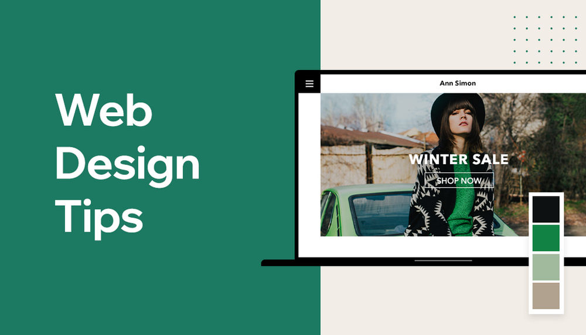

HOW TO CREATE A PERSONAL PORTFOLIO WEBSITE
Creating a website can seem like a daunting task, but with the right tools and a bit of planning, it can be a relatively simple and straightforward process. In this blog post, we will walk through the steps involved in creating a website, from choosing a domain name and hosting provider to designing and publishing your site.
1. Choose a Domain Name and Hosting Provider
The first step in creating a website is to choose a domain name, which is the address that people will use to access your site. You can choose a domain name that is related to your business or personal brand, and it is best to choose a domain name that is easy to remember and spell.
Once you have chosen your domain name, you will need to find a hosting provider. A hosting provider is a company that will store your website's files on a server and make them available to the public on the internet. There are many hosting providers to choose from, and it is important to find one that offers a good balance of price, reliability, and customer service.
Some popular websites for hosting and buying domain names
- WordPress
- Hostinger
- Bluehost
- Namecheap
- Hostgator
- Truehost
- GoDaddy
2. Design and Build Your Website

Once you have a domain name and hosting provider, you can begin designing and building your website. There are a few different ways to do this:
- Use a website builder: A website builder is a tool that allows you to create a website using a simple drag-and-drop interface. Website builders are great for beginners, as they require no coding knowledge and are easy to use.(Carrd, Wordpress)
- Use a Content Management System (CMS): A CMS is a platform that allows you to create and manage a website using a pre-built template. Popular CMSs include WordPress, Joomla, and Drupal.
- Hire a web developer: If you prefer more custom design, you can hire a web developer to create a website for you. This can be more expensive than the other options, but it will give you a more unique and customized site.
3. Publish and Promote Your Website
Once your website is designed and built, it is time to publish it and promote it. To publish your website, you will need to upload your files to your hosting provider's server. This process can vary depending on your hosting provider, so you should check their documentation for specific instructions.
To promote your website, you can use various methods such as:
- Social media marketing,
- Search Engine Optimization,
- Paid Advertising,
- Email marketing
Creating a website can seem like a lot of work, but with the right tools and a bit of planning, it can be a relatively simple and straightforward process. By choosing a domain name, finding a hosting provider, designing and building your website, and promoting it, you can have a professional and functional website up and running in no time.